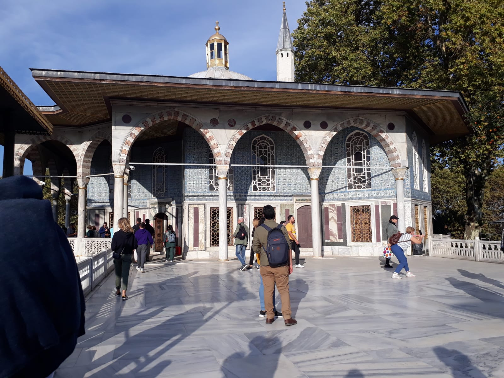
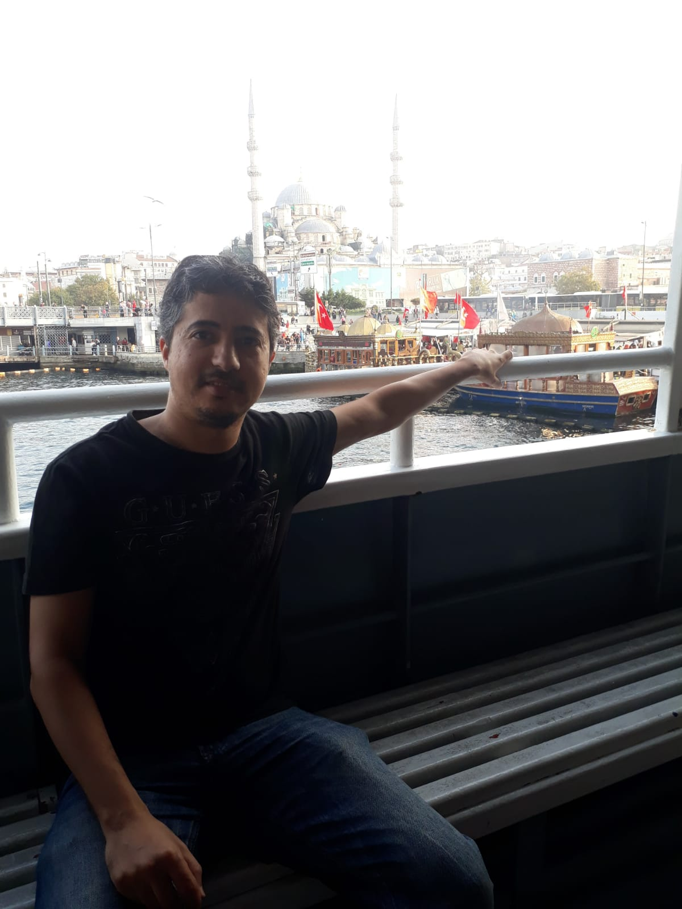

Turkey
Turkey, one of my most beautiful trip. Its culture is rather close to that of Morocco and its cities are magnificent and unique. This country has its own history that can be discovered very easily by visiting a few cities.
Istanbul, for example is the city that has remained etched in my memory. I was blown away by the beauty of the Hagia Sophia. It was built in the 6th century and then transformed into a mosque in 1453, which gives it this unique appearance. To admire a breathtaking panorama you have to climb to the top of the Camlica hill. You will discover a magnificent view overlooking the city of Istanbul.
Antalya with its beaches and waterfalls in blue and green colors is a very touristic city. Generally we go there to discover what its nature has to offer us. However, as a history buff, I particularly enjoyed visiting the archaeological sites. For those who love walking, Antalya has Turkey's longest hiking trail. It is called the Lycian way. It crosses ancient and historical sites over 500 km.